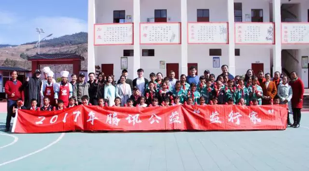
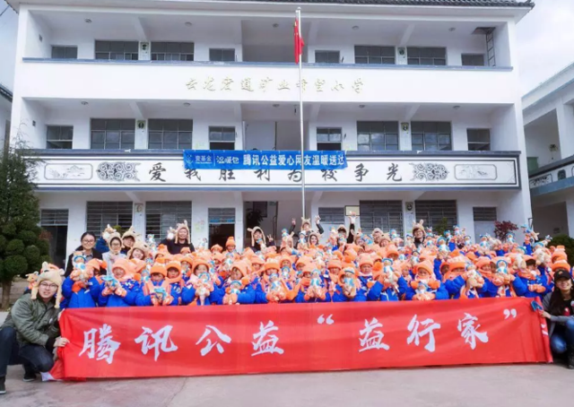
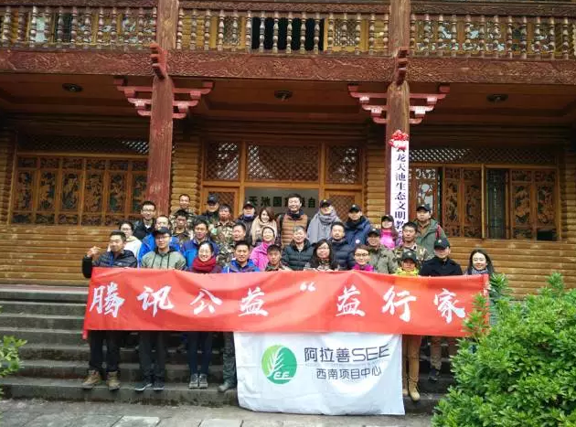

云南漾濞彝族自治县太平乡构皮小学，距离大理县城30公里。一路颠簸迂回，修建于二战时期用于物资运输的滇缅公路，是漾濞人走出大山的必经之道。
12月18日至21日，腾讯公益“益行家”探访沙龙集结全国20余名益行家代表与媒体，一起走进云南大理，对腾讯公益平台上的优质项目进行实地探访。而位于太平乡构皮小学的免费午餐项目，是本次探访之旅的第一站。
腾讯公益“益行家”公益探访沙龙，是腾讯公益联合平台的合作伙伴共同发起的线下探访活动，也是互联网公益透明化的一次创新性探索。旨在通过“线上捐赠”与“线下体验”的结合，带领益行家亲临项目实地看到项目的执行情况，让更多爱心网友共同见证信任与爱心的能量。此次探访的项目囊括了扶贫救助、教育、环境保护等领域。
在构皮小学，益行家们走进厨房给孩子们做午饭，走进课堂与学生交流互动。“过去很多孩子都在家放牛，现在家长们都愿意让他们来上学了。”构皮小学的老师说。2014年6月引入免费午餐项目以来，构皮小学让孩子们吃上了每顿4元标准的免费午餐，辍学率大幅降低。免费午餐自2011年4月正式启动至2017年9月底，募款已超过33258万元，累计开餐学校达到893所。截止2017年12月20日，项目在腾讯公益平台上累积筹款超过8900万元，帮助孩子们免于饥饿，享有热腾腾的免费午餐。
另一所位于云龙县关坪乡的胜利完小在海拔2650米高原上，年平均气温12度，是当地最偏远的一所完小。孩子们白天挂着鼻涕穿着薄单衣上课，夜里寄宿在学校宿舍，两人挤一张铁架床。
益行家们和壹基金云南联合救援网络的志愿者代表共同为孩子们送上温暖包，为他们换上崭新的棉袄、围巾、袜子。这是胜利完小120名学生第一次领到温暖包。除御寒衣物外，他们还领到了冻疮膏、绘图本、画笔等文具。
此外，益行家们还与孩子们一起参加壹基金儿童平安小课堂，绘制出校园风险地图，进行逃生演习游戏。
深圳壹基金公益基金会副秘书长李弘表示，今年壹基金将帮助全国23个省、自治区、直辖市的84500名儿童温暖过冬。温暖包从捐款、采购、分装再到最后的发放环节都得到了社会各界爱心人士的支持与参与。
除了关注孩子的教育与健康成长外，本次探访还来到了阿拉善SEE诺亚方舟位于云龙天池国家级自然保护区的项目地。这里既是层峦叠嶂的三江并流地，也是国家一级保护物种滇金丝猴和原生云南松林的主要区域。
早在30年前，龙勇诚教授就在这里开始了滇金丝猴的保护和研究活动。“我们保护濒临物种及其赖以生存的栖息地，不仅是为了保持物种的多样性，更是为了重建人与自然的和谐关系，”阿拉善SEE诺亚方舟委员会主席萧今说。
在2016与2017年腾讯99公益日期间“诺亚方舟”项目分别筹得爱心善款244.9万和290.35万元。
一直以来，信任和透明都是公益领域的痛点。腾讯公益“益行家”探访沙龙，通过带领全国各地爱心网友亲临项目地，实现从互联网公益捐助到实地参与感受，亲身见证互联网公益为当地人和环境带来的实际变化。
此外，本次公益探访沙龙还发起了对“公益透明化”议题的深入探讨，就如何进一步打破公益领域信息不对称，引导行业公益透明化进行深入交流。
从互联网走到线下，这是腾讯公益对公益透明化的一次创新性探索。在未来，腾讯公益还将联合平台上的伙伴们共同探索，丰富探访项目类型和参访成员，在公益项目可视化、透明化方面作出更多尝试，让更多爱心网友共同见证公益信任与透明的力量。